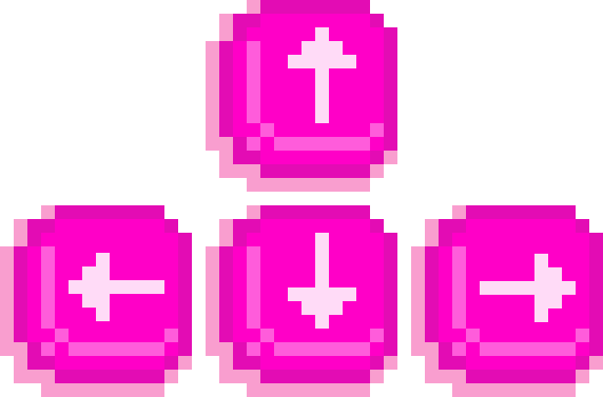

You're at your all-time favorite festival, the Fusion Festival in Lärz. The sun is shining, the beats are pumping, and you're heading to the Sonnendeck Stage to catch Kaufmann's insane set. After a quick loo visit, you're eager to return to your friends, who are already lost in the music. You can already picture it: dancing like there's no tomorrow, feeling the magic in the air, and sharing those unforgettable moments with your closest friends. But now comes the ultimate festival challenge: finding your way back to them. The day is in full swing, and the festival grounds are packed with people. On your journey, you'll face the "good and the bad" of festival life, obstacles that might confuse or slow you down. Will you make it back to the front left, or will the festival's chaos get the better of you?

Use the left and right arrow to move

SCORE: 0
LIVES: 3